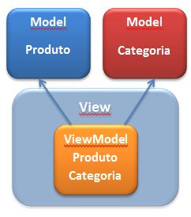

<header>
    <h1>4.2 | Passando dados para as Views</h1>
</header>

<main>
    <h2>Views e Models</h2>
    <div class="note note-info">
        <h2>Todas as views tem uma propriedade chamada <strong>Model</strong></h2>
        <h2>É possível atribuir o tipo da Model pela declaração <strong>@model</strong></h2>
    </div>

    <h2>Views fortemente tipadas</h2>
    <div class="note note-info">
        <h2>O que é View Model?</h2>
        <div class="row text-center">
            
        </div>
    </div>
</main>